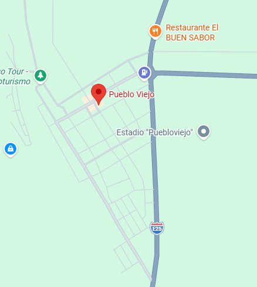

Reseña: Uno de los cantones históricos de Los Ríos. Es la tierra natal del célebre escritor ecuatoriano Justino Cornejo. Su economía se sostiene firmemente gracias a sus inmensas plantaciones de banano de exportación.
Urbanas: San Francisco de Puebloviejo.
Rurales: Puerto Pechiche, San Juan.
Gallo pinto, seco de pato y cazuela de mariscos de río.
Parroquia San Juan: Es un eje vial y comercial clave del centro de la provincia, muy conocido por sus paraderos gastronómicos tradicionales al pie de la carretera.
Iglesia Central y Parque Central: Conservan la arquitectura clásica de los pueblos tradicionales de la Costa ecuatoriana.
Hostal San Juan, Hospedaje Puebloviejo.
Elio Jacinto Ortega López.

41.000 habitantes.
